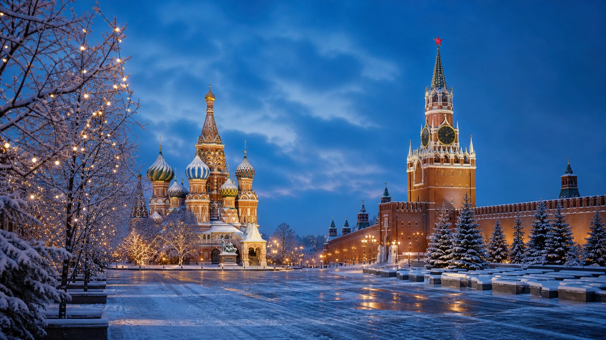
Москва
Красная площадь · Кремль
Новогодние традиции народов России
Новый год в городах и традициях народов России.
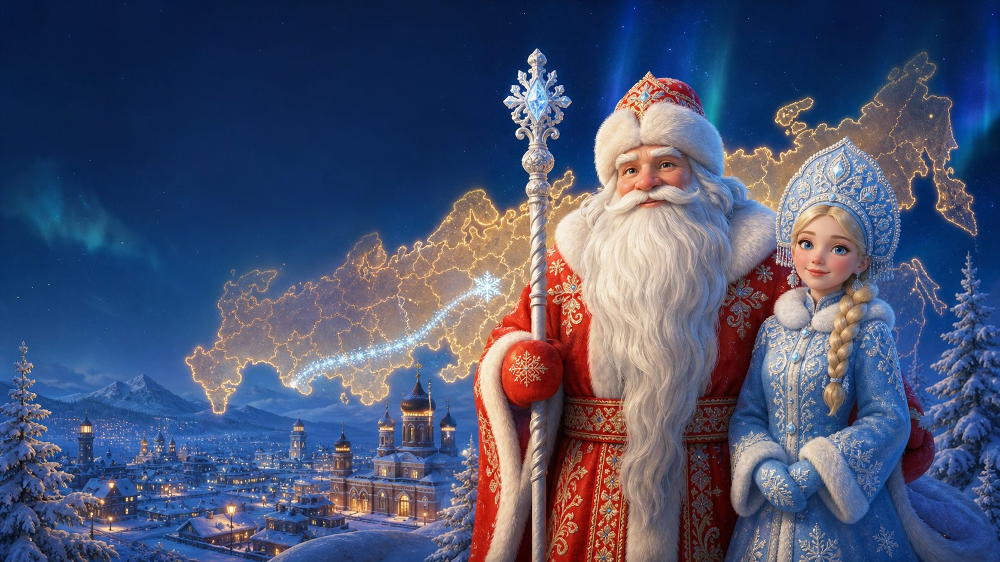
Новогодняя ночь в России
11 часовых поясов · один праздник
Зимние столицы праздника
Три города · три узнаваемых новогодних пейзажа

Красная площадь · Кремль
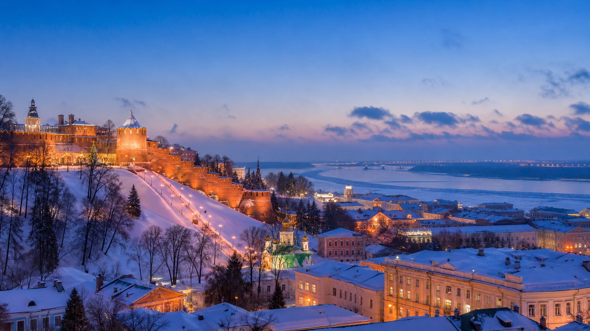
Кремль · стрелка Оки и Волги
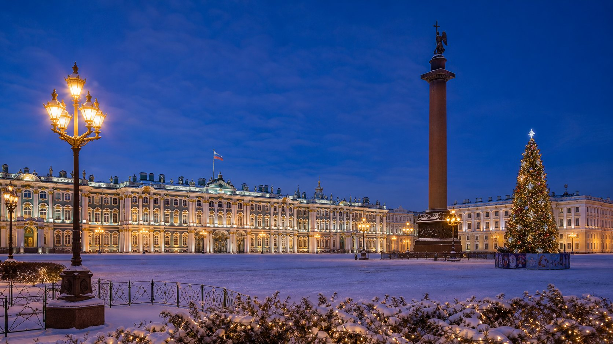
Дворцовая площадь · Эрмитаж
Национальный Новый год
Ысыах · Новый год народа саха
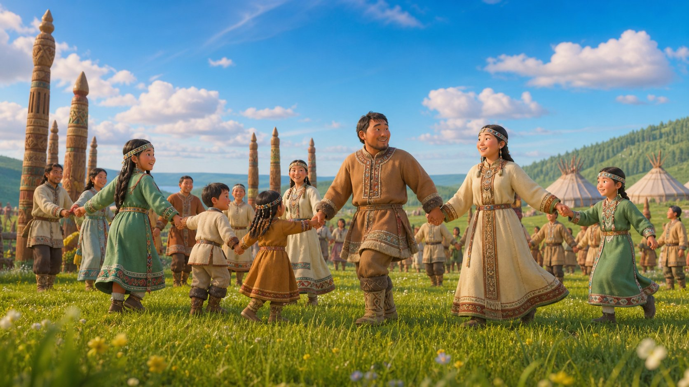
Второе новогоднее число
Ночь с 13 на 14 января
Два календаря · одна традиция
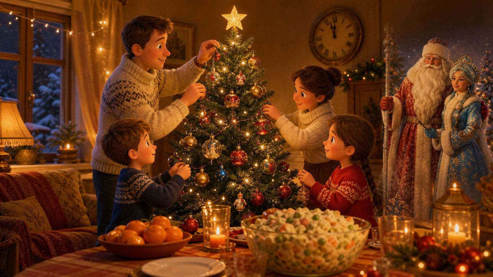
Национальный Новый год
Сагаалган · праздник Белого месяца
Молочные угощения · буузы
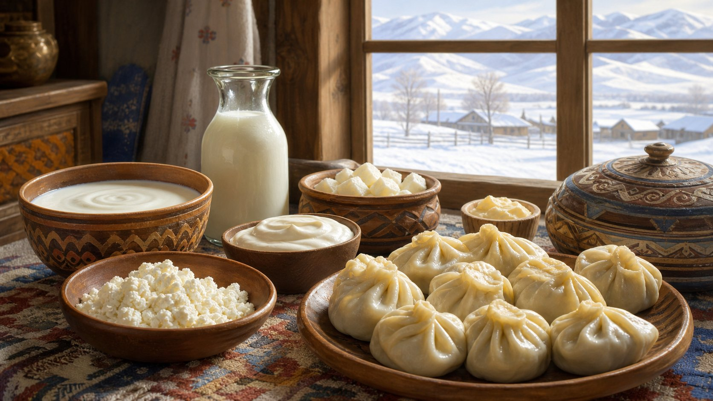
Новогодний образ
Сагаан Убгэн · Белый Старец
Добрые пожелания в Сагаалган
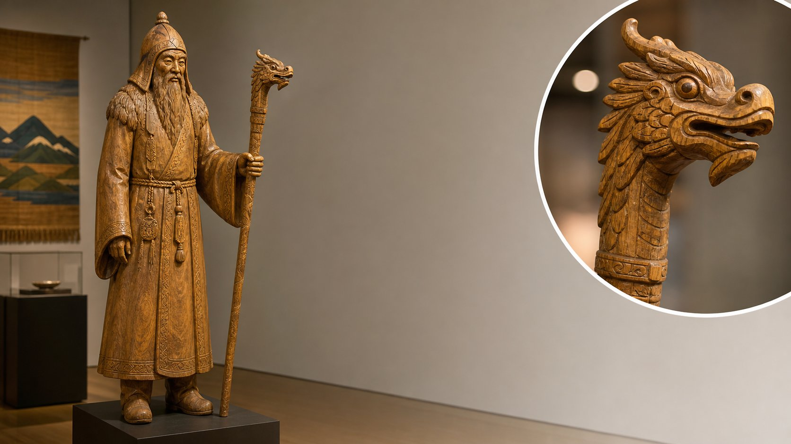
Новый год по-татарски
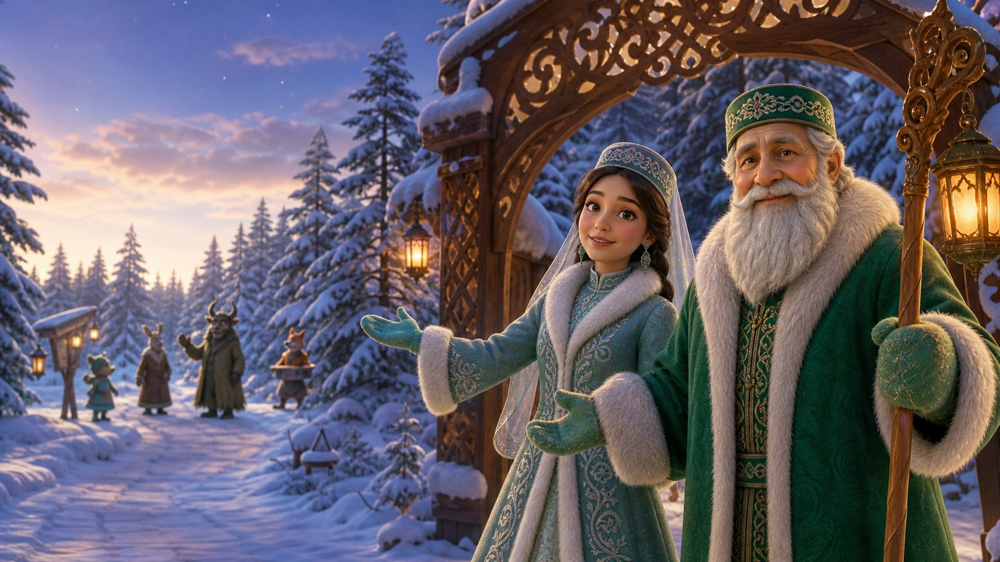
Новогодний герой
Тол Бабай · добрый зимний дед
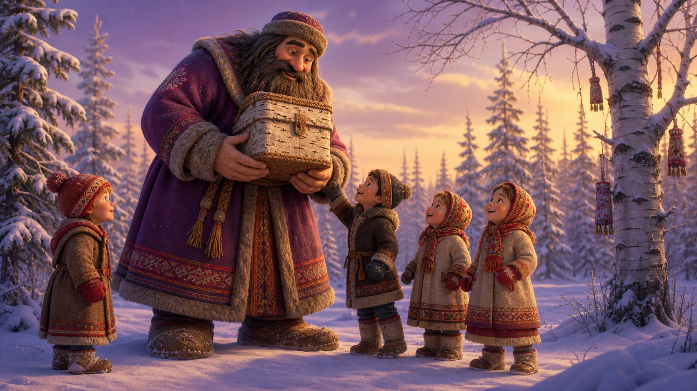
Новогодние обычаи Поволжья
Сурхури · Шорыкйол · Калядань-чи
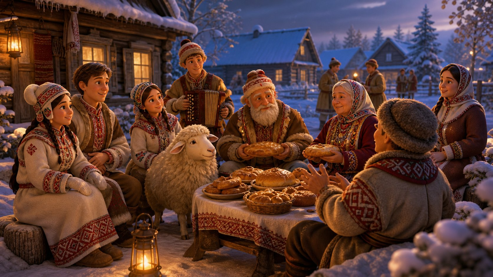
Три имени · общий праздник
Калмыкия · Тыва · Алтай
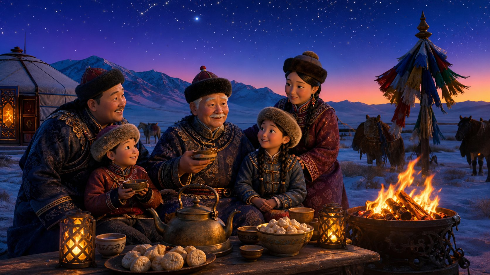
Итоги путешествия
Разные календари · общая радость
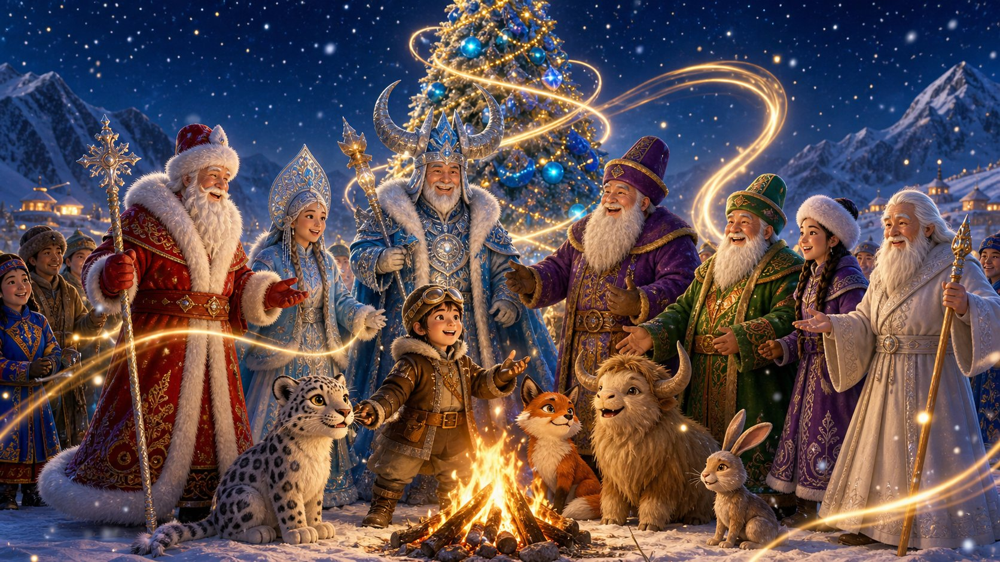
Регион на карте России
Метка показывает примерное положение.
Схематичная карта, не в масштабе.